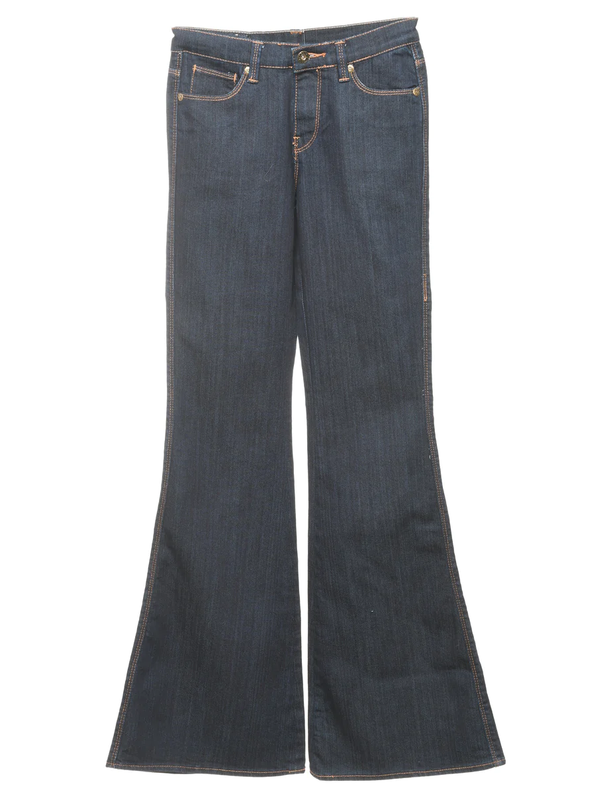
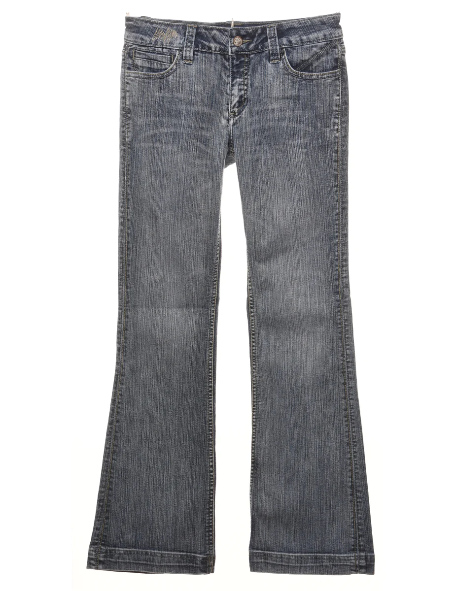
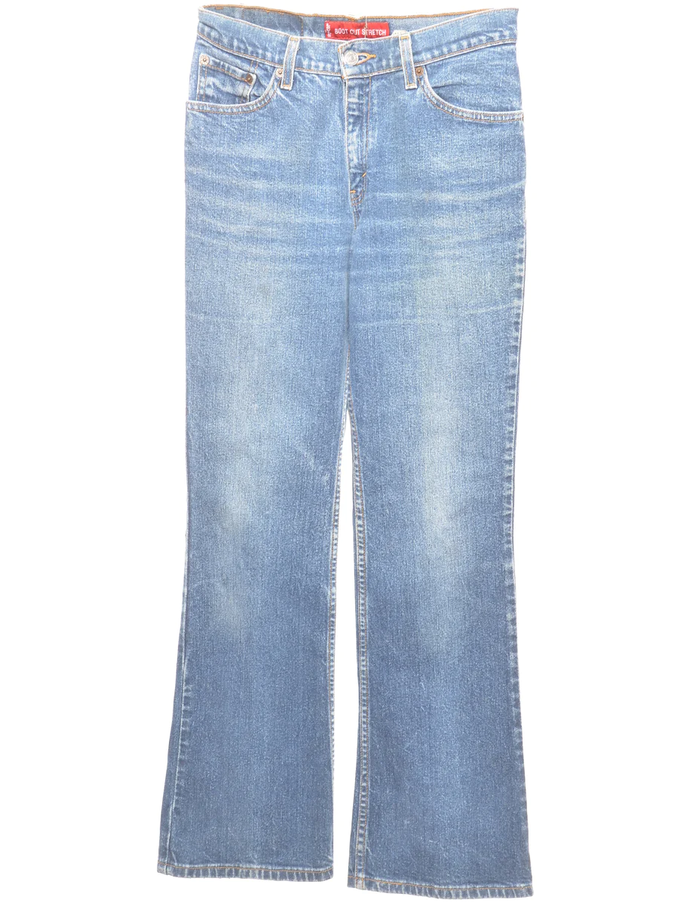
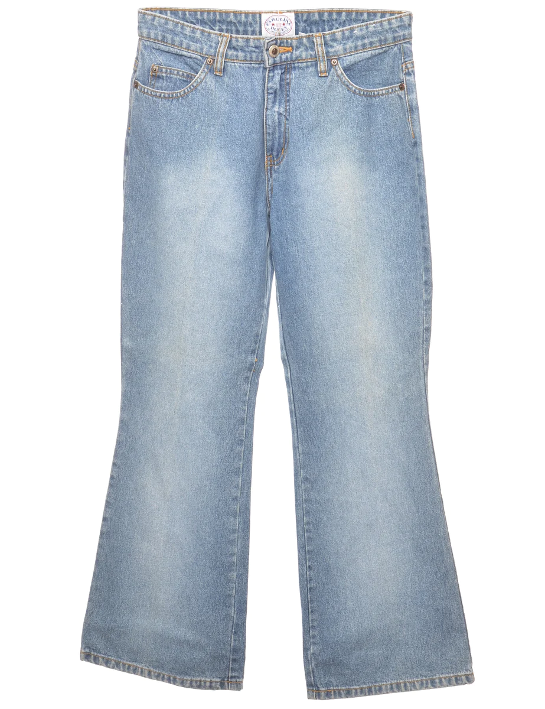
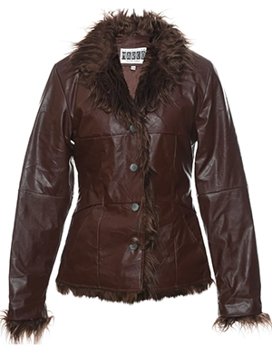
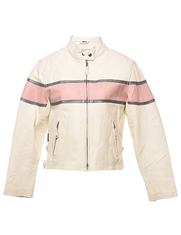
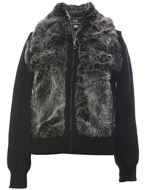
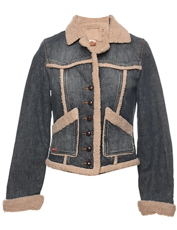

Must haves
Jeans
mid waist - W25 L34
Mid-rise dark wash bootcut jeans met meerderde zakken
- Waist: 32 inch
- Hips: 39 inch
- Inseam: 32 inch
bf flare - W32 L35
Mid-rise boyfriend flare met grijze wash met rechte pijpen.
- Waist: 29 inch
- Hips: 37 inch
- Inseam: 30 inch
flared - W25 L34
Bootcut levi's jeans met 517's fit. Komt in lichte-wash met zakken.
- Waist: 28 inch
- Hips: 37 inch
- Inseam: 31 inch
high waist - W28 L28
High waist jeans met lichte was en wijde pijpen.
- Waist: 30 inch
- Hips: 39 inch
- Inseam: 33 inch
Jassen
Bruine leren jas met bont
Donker bruine leren jas met immitatie bont bij de hals.
- Arm lengte: 27 inch
- Bust: 60 inch
- Lengte: 35 inch
Hot leren jas in wit-roze
Hot white en pink leren jas. Met veel zakken en van het merk HOT PINK
- Arm lengte: 23 inch
- Bust: 50 inch
- Lengte: 20 inch
mid waist - W25 L34
Mid-rise dark wash bootcut jeans with multiple pockets
- Arm lengte: 27 inch
- Bust: 60 inch
- Lengte: 35 inch
mid waist - W25 L34
Mid-rise dark wash bootcut jeans with multiple pockets
- Arm lengte: 27 inch
- Bust: 60 inch
- Lengte: 35 inch